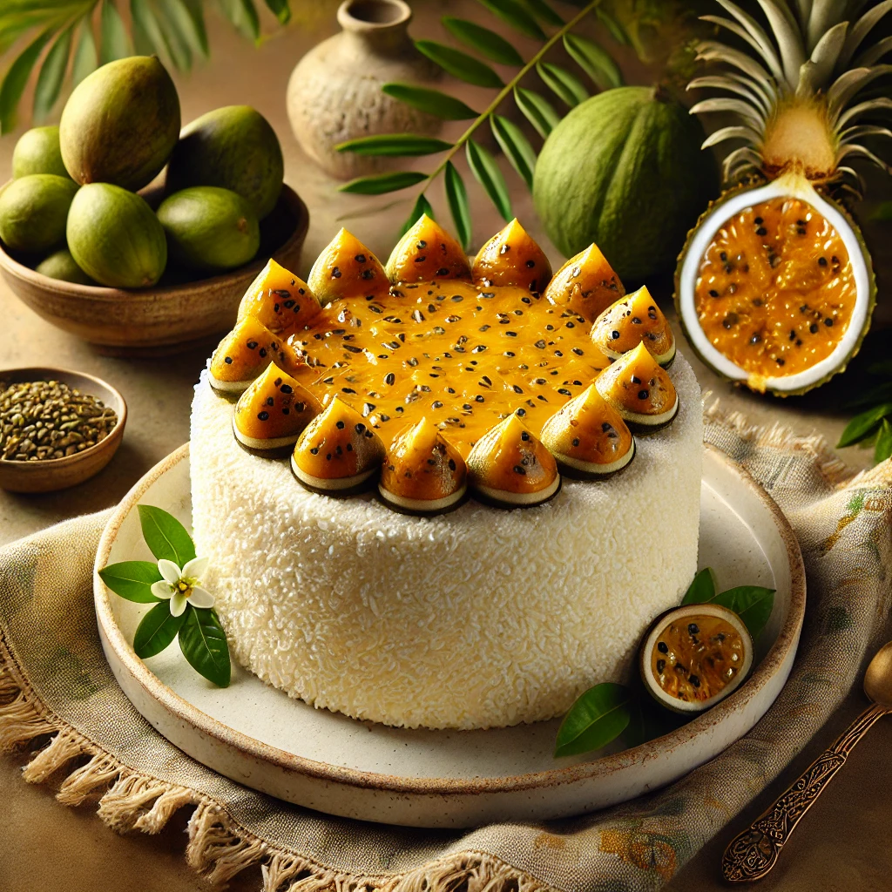

Receita de Bolo de Maracujá

Ingredientes:
- 3 ovos
- 1 xícara de suco de maracujá natural
- 1 xícara de açúcar
- 1/2 xícara de óleo vegetal
- 2 xícaras de farinha de trigo
- 1 colher de sopa de fermento em pó
- Raspas de casca de um maracujá (opcional)
Modo de Preparo:
- Preaqueça o forno a 180°C e unte uma forma com manteiga e farinha.
- Em uma tigela, bata os ovos com o açúcar até obter uma mistura cremosa.
- Adicione o suco de maracujá, o óleo vegetal e as raspas de casca de maracujá (se estiver utilizando) à mistura de ovos e açúcar. Misture bem.
- Incorpore aos poucos a farinha de trigo peneirada e mexa até ficar homogêneo.
- Adicione o fermento em pó e misture delicadamente.
- Despeje a massa na forma preparada e leve ao forno por 35-40 minutos, ou até que o bolo esteja dourado e um palito inserido no centro saia limpo.
- Retire do forno, deixe esfriar e desenforme.
- Aproveite uma deliciosa fatia de bolo de maracujá!